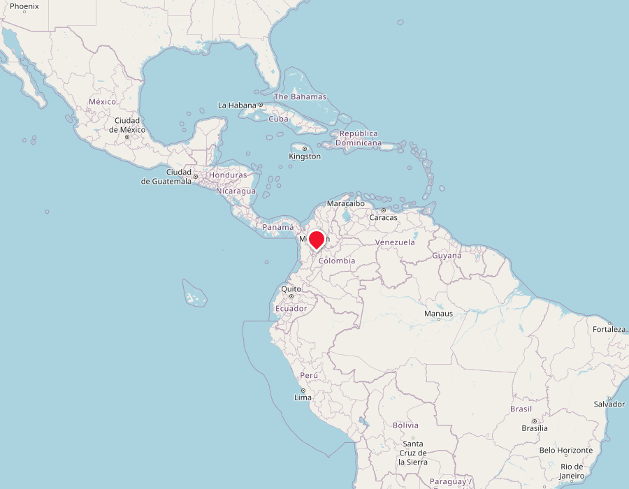
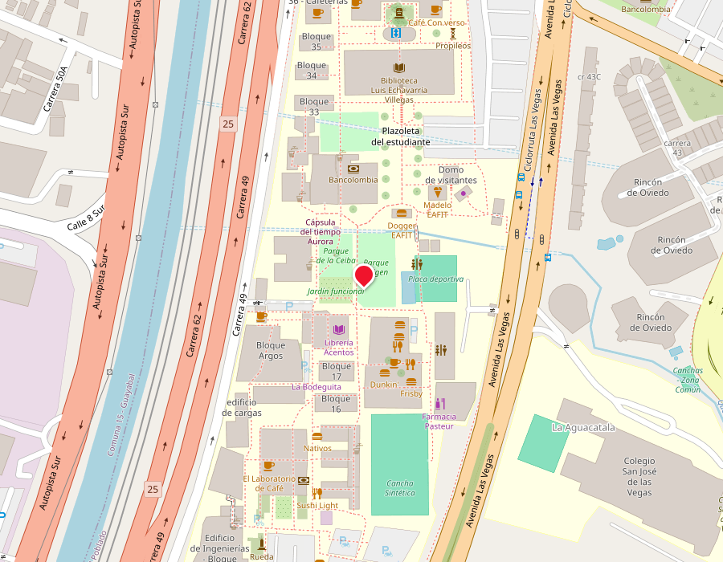

Escalas, píxeles y coordenadas geográficas
Semana 2 · Módulo 0: Fundamentos cartográficos y geodesia
Sesión 2
Lo que haremos hoy
Repaso
Lo que quedó pendiente de la Semana 1
Escala
Numérica, gráfica, distancia y área real — con ejemplos que resuelven ustedes
Píxel y resolución
La otra forma de medir el detalle de un mapa
Coordenadas geográficas
Latitud, longitud, GMS y decimales — con conversión guiada
El Bloque 2 (laboratorio, 4:30–6:00 p.m.) es el Taller G02 en grupo, con mapas digitales en PC. Hoy vamos a practicar en el aula los mismos cálculos que después resuelven con su propio mapa.
Antes de seguir
¿Qué vimos la semana pasada?
- El curso gira alrededor de un proyecto territorial continuo
- Trabajaremos sobre una misma área durante todo el semestre
- Geomática = capturar + analizar + representar el territorio
- El pacto pedagógico ya quedó acordado y publicado en Teams
En parejas, 3 minutos
¿Qué recuerdan de la lectura?
Scale and Resolution (cap. 7 de Making Effective Maps), asignada al cierre de la Semana 1. Discutan estas tres preguntas antes de que sigamos.
- La lectura menciona tres formas de indicar la escala de un mapa. ¿Cuáles son, y cuál sigue funcionando aunque el mapa se agrande o se reduzca?
- Según la lectura, ¿de qué depende que un mapa sea de "escala grande" o "escala pequeña"? (pista: no es un valor fijo)
- Para datos raster (imágenes), la lectura no habla de "escala" sino de otro concepto. ¿Cuál es, y qué mide?
El primer problema de todo mapa
¿Qué es una escala?
Un mapa es siempre una versión reducida de la realidad. La escala dice cuánto se redujo, y se puede expresar de dos formas.
Escala numérica
Una razón como 1:5 000: 1 unidad en el papel equivale a 5 000 en el terreno. No depende de cómo se imprima el mapa.
Escala gráfica
Una barra dibujada en el mapa con distancias reales marcadas. Sigue siendo válida aunque el mapa se fotocopie o se reduzca — la numérica no.
Vamos a usar este mapa toda la sesión
Su mapa de ejemplo
Un lote, un río, una vía y dos puntos (A y B) a escala 1:5 000. Con este mismo mapa vamos a calcular distancia real, área real y coordenadas.
Mapa ilustrativo del ejercicio (no es un mapa oficial). La escala gráfica de abajo confirma 1:5 000.
De la regla al terreno
Escala → distancia real
Tres pasos, siempre en el mismo orden.
Medir en el mapa
Con regla, la distancia entre los dos puntos que les interesan.
Aplicar la escala
Multiplicar esa medida por el denominador de la escala (1:N → ×N).
Convertir unidades
El resultado queda en las unidades de la regla: pasarlo a metros.
En parejas, 3 minutos
Practiquen: distancia real
¿Qué distancia real hay entre A y B?
En el mapa de la diapositiva anterior, la distancia medida entre A y B es de 3.4 cm. La escala del mapa es 1:5 000. Calculen la distancia real en metros, con lápiz y calculadora, antes de ver la solución.
Revisemos juntos
Solución: distancia real
Un error frecuente
Escala → área real
El área no se escala igual que la distancia.
Escala lineal
Si la escala es 1:N, una distancia se multiplica por N para volverla real.
Escala de área
Un área se multiplica por N², porque tiene dos dimensiones. El error más común es olvidar el cuadrado.
En parejas, 3 minutos
Practiquen: área real del lote
¿Qué área real tiene el lote?
El lote marcado en el mapa mide 2 cm × 1.5 cm en papel. La escala sigue siendo 1:5 000. Calculen primero cada lado en metros, y luego el área real en m². ¿A cuántas hectáreas equivale?
Revisemos juntos
Solución: área real
La otra forma de medir detalle
Píxel y resolución espacial
Además de escala, las imágenes y datos raster se miden por resolución. Lo veremos a fondo en el Módulo 2.
Píxel
La celda más pequeña de una imagen o raster. Cada píxel representa un valor único (color, elevación, temperatura...).
Resolución espacial
El tamaño real que representa cada píxel en el terreno, ej. una imagen Sentinel-2 tiene píxeles de 10×10 m.
El mismo objeto, dos resoluciones
A menor tamaño de píxel, más detalle
Las dos cuadrículas representan el mismo lago circular, capturado con dos tamaños de píxel distintos.
Resolución gruesa (píxel grande) — borde en escalones
Resolución fina (píxel pequeño) — borde más suave
Quiz rápido, en voz alta
¿Cuál conviene para mapear una fisura pequeña?
Piensen en las dos cuadrículas anteriores antes de responder.
Respuesta: B — pero a mayor resolución, más peso de archivo y más costo de procesamiento. Esa es la compensación (trade-off) que van a manejar todo el semestre.
Sección 2
Coordenadas geográficas
Ubicar cualquier punto del planeta
Latitud y longitud
El sistema de referencia global, antes de llegar a los sistemas propios de Colombia en la próxima clase.
Latitud
Distancia angular al norte o sur del Ecuador (0° a 90°). Colombia está cerca de 0° a 12° N.
Longitud
Distancia angular al este u oeste del meridiano de Greenwich (0° a 180°). Medellín está cerca de −75.5°.
Esquema, no proyección exacta
Paralelos, meridianos y un punto
Cada línea equivale a 30°. El punto marcado es Medellín: 6.24° al norte del Ecuador, 75.58° al oeste de Greenwich.
Con dos números (latitud, longitud) se ubica cualquier punto del planeta sin ambigüedad.
Dos formas de escribir lo mismo
Grados-minutos-segundos ↔ decimales
QGIS y GPS suelen trabajar en decimales; la cartografía tradicional casi siempre trae GMS.
6° 15' 32" N
Grados, minutos (1/60°) y segundos (1/3600°): formato tradicional de cartografía impresa.
Conversión
Decimal = grados + minutos/60 + segundos/3600. El hemisferio S u O se vuelve signo negativo.
6.258889° N
Formato que usan GPS, QGIS y casi todo el software SIG moderno.
Individual, 2 minutos
Practiquen: GMS → decimal
Convierte a decimal
Un punto GNSS quedó registrado como 3° 30' 36" N. Aplica la fórmula grados + minutos/60 + segundos/3600 y escribe el resultado en decimal antes de ver la solución.
Revisemos juntos
Solución: GMS → decimal
Individual, 2 minutos — el camino inverso
Practiquen: decimal → GMS
Convierte a GMS
QGIS les muestra la longitud −75.5°. Separen la parte entera (grados), conviertan el decimal restante a minutos, y si sobra decimal, conviertan a segundos. No olviden el hemisferio (el signo negativo es Oeste).
Revisemos juntos
Solución: decimal → GMS
El otro sentido del problema
¿Y si no me dan la escala?
En el Taller de hoy, ningún mapa trae la escala impresa: ustedes la calculan con un elemento de referencia.
El método
Busquen en el mapa algo cuyo tamaño real conozcan (una cancha, el ancho de una vía, una manzana típica). Midan ese mismo elemento en el mapa.
La fórmula
Escala = distancia en el mapa ÷ distancia real, en las mismas unidades, simplificada como 1 : N.
Su caja de herramientas para hoy
Referencias comunes (tamaño real típico)
En el mapa de su grupo, busquen si aparece alguno de estos elementos. No hace falta que sea exacto: sirve como buena aproximación.
| Elemento | Tamaño real típico |
|---|---|
| Cancha de fútbol reglamentaria | 105 × 68 m |
| Piscina olímpica | 50 × 25 m |
| Pista atlética (carril interior) | 400 m de circunferencia |
| Cancha de baloncesto | 28 × 15 m |
| Vía principal (ancho por carril) | ~3.5 m |
| Manzana típica (cuadrícula colonial) | ~80 – 100 m de lado |
Ejemplo resuelto
Una cancha como referencia
Una cancha reglamentaria (105 m de largo) mide 2.1 cm en el mapa
En parejas, 3 minutos
Practiquen: hallar la escala
¿A qué escala está este mapa?
Una manzana típica de cuadrícula colonial (100 m de lado real) mide 2.5 cm en el mapa. Calculen la escala, simplificada como 1:N, antes de ver la solución.
Revisemos juntos
Solución: hallar la escala
Antes de ir al laboratorio
¿Cuántos decimales necesito en una coordenada?
Cada cifra decimal de un grado cambia cuánto representa en el terreno — importa para el Módulo 3 (GNSS).
| Decimales | Precisión aproximada | Ejemplo de uso |
|---|---|---|
| 0 | ~111 km | País o continente |
| 1 | ~11.1 km | Una ciudad |
| 2 | ~1.1 km | Un barrio |
| 3 | ~111 m | Una manzana |
| 4 | ~11 m | Un lote o edificio |
| 5 | ~1.1 m | Posición GPS típica |
| 6 | ~0.11 m | GPS de precisión (RTK) |
Ejercicio con Google Earth / Google Maps
Conviertan y ubiquen: ¿importa cuántos decimales usen?
Coordenada dada: 6° 11' 59.04" N, 75° 34' 43.27" W. Conviértanla a decimal — elijan ustedes cuántas cifras decimales usar.
Parte A: a nivel de continente
Busquen su coordenada convertida en Google Maps con el mapa alejado, a nivel de continente. Comparen con sus compañeros de al lado.
¿El punto cae en un lugar muy distinto según cuántos decimales usó cada quien, o se ve prácticamente igual?

Vista a nivel continente
Parte B: acerquen el zoom
Ahora busquen el mismo punto en la portería de EAFIT
Mismo punto, mismo dato convertido
Ubiquen la misma coordenada que acaban de convertir, pero ahora hagan zoom hasta el nivel de la portería/campus de EAFIT.
¿Ahora sí notan diferencia entre las respuestas de sus compañeros? Quien redondeó a 2 cifras puede caer a más de 1 km; quien usó 4-6 cifras debería caer casi exacto en el campus.

Vista a nivel portería EAFIT
El número que van a usar todo el semestre
De grados a metros: el factor de conversión
En el Ecuador, un grado equivale a unos 111 km sobre el terreno.
Con este factor pueden convertir cualquier cifra decimal de una coordenada a metros — es exactamente lo que van a hacer en el Taller G02 de hoy y en el Taller G03 de la próxima semana.
El mismo factor, aplicado a cada cifra decimal
¿Cuánto error meten según cuántos decimales usen?
Aplicando 111 km por grado sobre el valor de cada cifra decimal:
| Decimales | Valor de la cifra | Resolución / error en el terreno |
|---|---|---|
| 1 | 0.1° | ≈ 11.1 km |
| 2 | 0.01° | ≈ 1.11 km |
| 3 | 0.001° | ≈ 111 m |
| 4 | 0.0001° | ≈ 11.1 m |
| 5 | 0.00001° | ≈ 1.11 m |
| 6 | 0.000001° | ≈ 11.1 cm |
| 7 | 0.0000001° | ≈ 1.11 cm |
Para discutir en parejas, 2 minutos
¿Por qué el taller pide 4 cifras decimales?
El Ejercicio de Coordenadas del Taller G02 pide convertir a decimal con 4 cifras. Con lo que acaban de ver en Google Maps, ¿por qué esa precisión alcanza para ubicar un lote pero no para un levantamiento GNSS de precisión?
Ahora en grupo, en el laboratorio
Taller G02: Escalas y Coordenadas
Papel, calculadora y el mapa digital de su grupo, abierto en el PC: el cálculo sigue siendo manual, igual al que acaban de practicar.
Grupos
Su grupo fijo del proyecto territorial (2 o 3 personas), con el mapa digital asignado a su PC.
Hoy resuelven
Parte 1: Escala (distancia y área), igual al ejercicio de A y B. Parte 2: Coordenadas geográficas (GMS ↔ decimal).
Guarden sus respuestas
Las retomamos en el Módulo 1 para verificar con QGIS si el cálculo manual se acercó al valor exacto.
Bloque 2 · rutina de laboratorio, 5 minutos
Antes de empezar: validemos accesos
Tres cosas rápidas al sentarse en el PC, antes de abrir el taller.
Inicien sesión
Usuario y contraseña institucional en el PC del laboratorio.
Verifiquen ArcGIS Pro
Ábranlo y confirmen que inicia sesión con su cuenta institucional. Lo usamos hasta la Semana 15, pero la licencia se pidió desde el inicio del semestre — si falla, avísenme hoy, así hay tiempo de resolverlo con TI.
Abran su mapa asignado
El archivo digital de su grupo, compartido por Teams, listo para el Taller G02.
Para los grupos que vayan más rápido
¿Terminaron la Parte 1 antes de tiempo?
No se adelanten a la Parte 3 (es de la próxima semana): usen el tiempo para verificar lo que ya calcularon.
Cómo verificar
Abran la misma zona de su mapa en un visor georreferenciado (IGAC Colombia en Mapas o Google Maps/OpenStreetMap) y comparen su escala calculada a mano contra la escala gráfica que muestra el visor.
Qué no reemplaza
Es solo verificación, no cambia lo que ya escribieron. Si la diferencia es grande, revisen primero las unidades (cm vs. m) antes de tocar el resultado.
Cierre
Para la próxima clase
Semana 3
Datum, Magna Sirgas, CTM12 · Taller G03 · Asignación de áreas de estudio · Quiz 1.
2 lecturas cortas
IGAC-DANE (secciones 8-9) y Rodolfo Franco, "Origen Nacional" (secciones 1-3) — las usamos directamente en la Parte 4 del taller.
¿Dudas?
Escríbanme: fjgomezc@eafit.edu.co · Chat de Teams